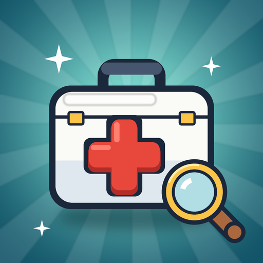

Privacy Policy
MediCorp: Doctor Simulation · last updated 1 October 2026
In short
MediCorp: Doctor Simulation ("MediCorp", formerly Harrow Bay Clinic) is a game. We keep what the game needs to save your clinic, keep it working and understand how it is played. The game is free and shows ads from Google AdMob; you can remove them with Premium. Where the law requires it, we ask for your consent before any ad is requested, and you can change that choice at any time. We don't sell your data ourselves. You can delete your account and everything linked to it from inside the game at any time.
The medical content is fictional. The game never asks about your own health.
What we collect
| Data | Why | When |
|---|---|---|
| Account: a user ID, and your name and email address if you sign in with Google or Apple (Apple may give us a private relay address instead) | To keep your clinic in your account and let you continue on another device | Only if you sign in or play as a guest |
| Game save: your clinic's progress (day, coins, rooms, staff, story progress and so on), plus when you last played, the app version and whether you use Android or iOS | To back up your game and restore it | While signed in or playing as a guest |
| Gameplay events: how you play the game, for example which screens you open and which buttons you press, the questions you ask patients and the tests and treatments you choose (all patients and their answers are fictional), cases won or lost, finishing a day, building rooms, reaching a new clinic level, sign-in attempts and errors, settings you change, and buying Premium (which plan, not the payment). Each event includes your progress in the game (day, clinic level, coins, whether you have Premium). Also device model, OS version, app version, country (from the IP address), an app instance ID and your user ID | To see which parts of the game are too easy, too hard or confusing, and improve them | While you play |
| Crash reports: what the app was doing when it crashed or hit an error, device model, OS version and your user ID | To find and fix bugs | When something goes wrong |
| Advertising data, collected by Google AdMob: your device's advertising ID (on iPhone only if you allow tracking), IP address (which gives an approximate location), device and app information, and which ads were shown or tapped | To show ads, limit how often you see the same one, measure them and prevent fraud; and, where you have agreed, to make ads more relevant to you | From day 3 of your clinic, unless you have Premium |
| Your ad privacy choices: the consent you gave or refused | So we ask only once and respect your answer | Stored on your device, where consent is required |
| Purchases: whether your Google Play or App Store account owns Premium (the product and a purchase reference from the store) | To unlock Premium and restore it after a reinstall, and so we can help you with a purchase question | When you buy or restore, and each time you open the game. Your plan (monthly, lifetime or none) is also saved to your account profile while you are signed in or playing as a guest |
| Game settings: sound, music and vibration choices, and your game save | So the game remembers them | Stored on your device only |
We don't collect your contacts, photos, precise location or health data. We never see your card number or other payment details: purchases are handled entirely by Google Play or the Apple App Store.
Ads and your choices
Ads are provided by Google AdMob. There are no ads on the first two days of your clinic, and none at all for Premium players.
- In the European Economic Area, the United Kingdom and Switzerland, the game shows Google's consent form before any ad is requested. You can consent, refuse, or choose purpose by purpose. If you refuse, you still see ads, but they are not personalised.
- In US states with privacy laws, you can opt out of the sale or sharing of your data for advertising through the same form.
- On iPhone and iPad, Apple's "Allow tracking?" prompt decides whether ads may use your device's advertising identifier. The game plays the same either way.
- You can change your answer at any time in the game under Settings → Ad privacy choices (shown where consent applies), and in your device settings (Android: Settings → Google → Ads; iOS: Settings → Privacy & Security → Tracking).
How Google uses data from apps that show its ads: policies.google.com/technologies/partner-sites.
Purchases
Premium is an optional purchase that removes all ads: a monthly subscription or a one-time lifetime purchase. Payment, billing, renewal, cancellation and refunds are handled by Google Play or the Apple App Store under their own terms and privacy policies. You manage or cancel a subscription in your store account. The game only learns whether your store account owns Premium, and saves which plan you have to your account profile.
Who processes it
The game uses Google Firebase: Authentication (sign-in), Cloud Firestore (your save), Google Analytics for Firebase (gameplay events), Crashlytics (crash reports) and Remote Config (game balance settings). Sign-in uses Google Sign-In or Sign in with Apple. Ads and the consent form come from Google AdMob and Google's User Messaging Platform. Purchases go through Google Play Billing or Apple's App Store. Google and Apple handle this data under their own privacy policies: Google, Firebase, AdMob, Apple. Data may be stored on servers outside your country.
How long we keep it
Your account and game save are kept until you delete your account. Analytics events are kept by Google for a limited time (at most 14 months) and crash reports for about 90 days. Advertising data is kept by Google according to its own policies. If you only play without an account, your game stays on your device.
Deleting your account
In the game, open Settings → Delete account. This permanently deletes your account, your cloud save and profile, and the clinic on that device. You may be asked to sign in once more to confirm it's you. Analytics and crash data are not tied to your name or email and expire on their own as described above. Uninstalling the app removes everything stored on the device. Deleting your account does not cancel a subscription: cancel it in your Google Play or App Store account.
If you can't open the game any more, contact us (below) and we will delete your account for you.
Your rights
Depending on where you live (for example under the GDPR in the EU/UK, KVKK in Türkiye, or state privacy laws in the United States), you can ask to see, correct, export or delete your data, withdraw a consent you gave, object to how your data is used, or opt out of its sale or sharing for advertising. Contact us and we'll respond within 30 days.
Children
The game is not directed at children under 13, and we don't knowingly collect data from them. If you believe a child has given us data, contact us and we will delete it.
Changes
If this policy changes, we'll update the date at the top of this page, and tell you in the game for important changes.
Contact
Questions or requests: YOUR-CONTACT-EMAIL.